ONE MORE YEAR
Allt här är renderat av spelet självt (--brand=), med spelets riktiga typsnitt och färger, så det ser
ut exakt så här i spelet. Emblemen är ritade i kod och kan därför animeras och skalas fritt.
Namnförslag finns i names.md.
Emblemet: årsringar
Min favorit. Ett tvärsnitt av en stam: varje ring är ett år, den yttersta och nyaste har tidsepokens accentfärg. One more year betyder en ring till, och trädet är släkten. Det fungerar från 32 pixlar upp till en hel skärm. Det byter färg med epoken, precis som resten av spelet.
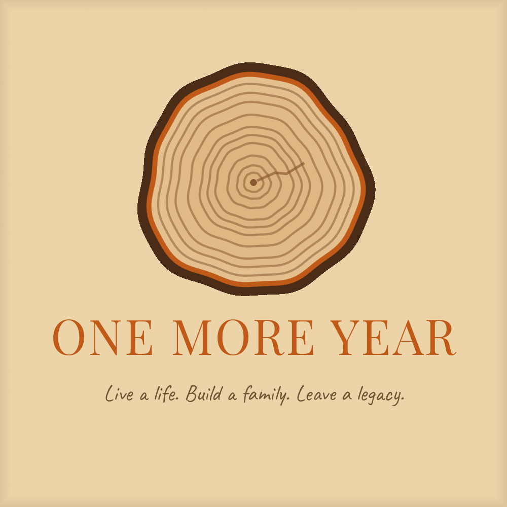
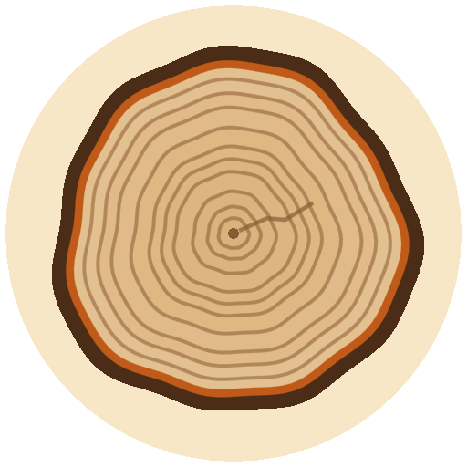
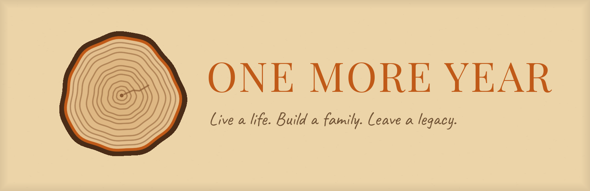
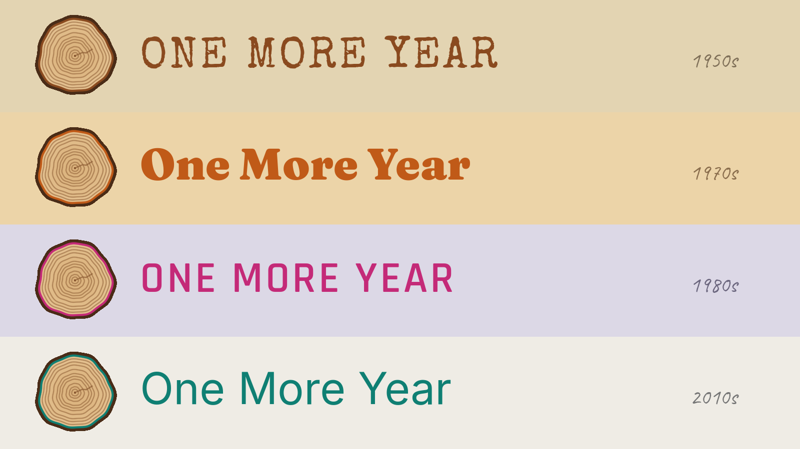
Appikoner, fyra förslag
Varje ikon i 256, 64 och 32 pixlar, så att man ser hur de håller när de blir små (aktivitetsfältet, Steam-biblioteket). Årsringarna är nu spelets ikon. De andra är alternativ.
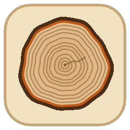
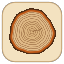
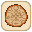
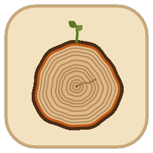
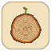
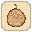
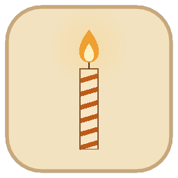
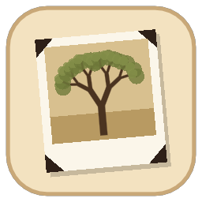
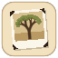
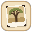
Från vänster: årsringar, årsringar med en grodd (släkten fortsätter), ett födelsedagsljus, ett albumfoto av ett träd.
Andra logotyper
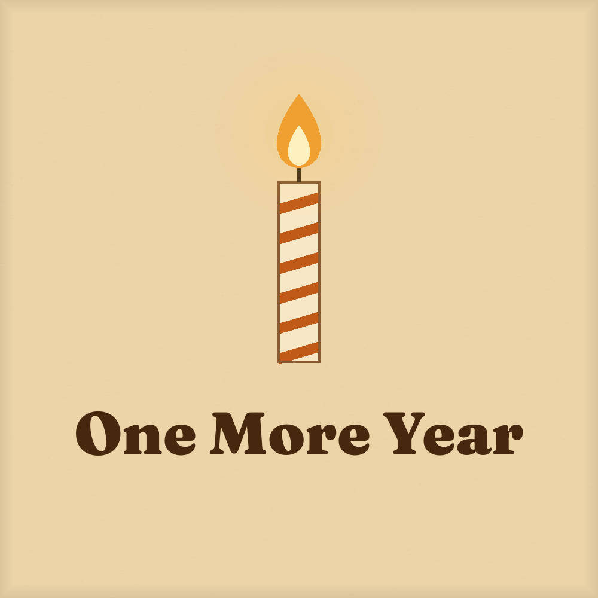
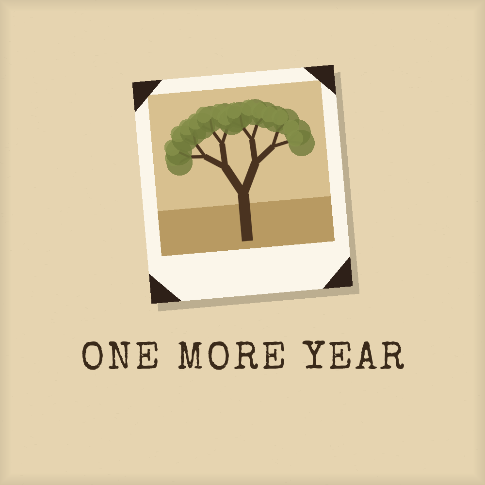
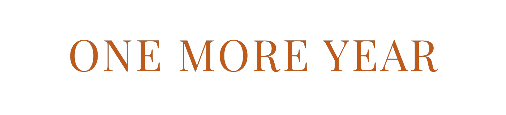
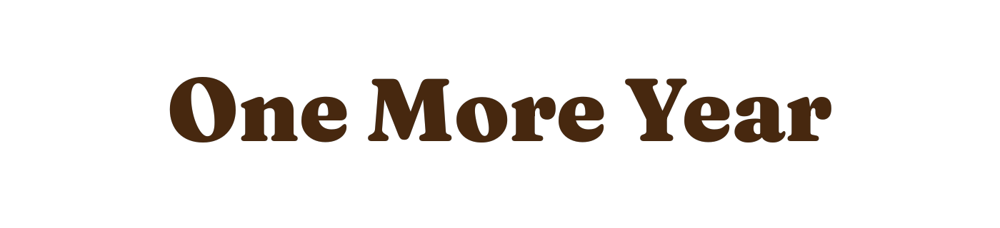
Start och laddning
När spelet startar visas nu en papperssida där årsringarna växer fram, ett år i taget, medan namnet tonar in. Sedan bleknar den bort till titelskärmen. En knapptryckning hoppar över den. Den är redan inlagd i spelet.
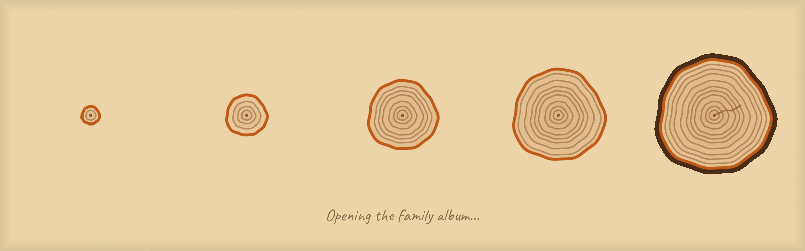
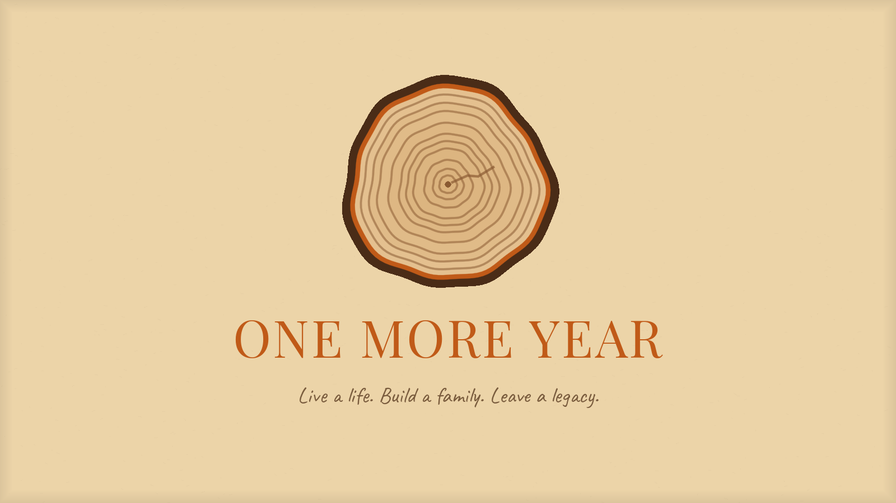
Butiksbilder (Steam-storlekar)
Utkast i rätt mått. Porträtten kommer från en riktig familj i spelet, i olika åldrar.
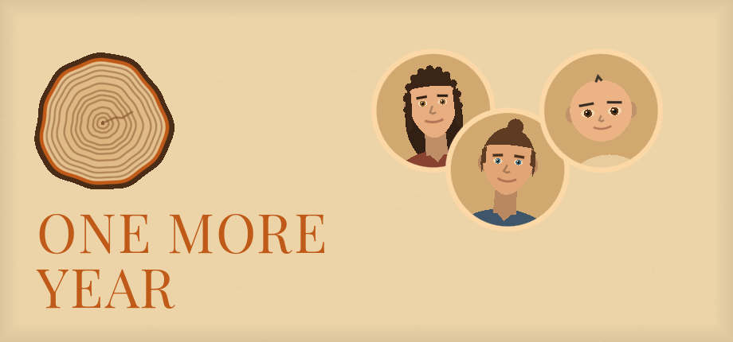
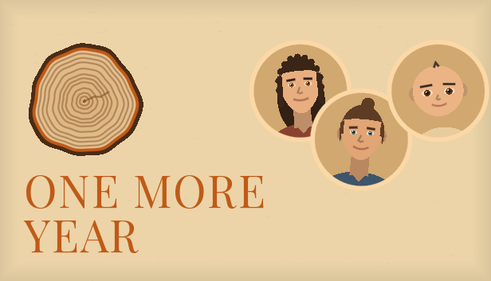
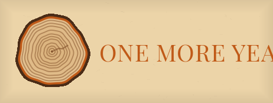
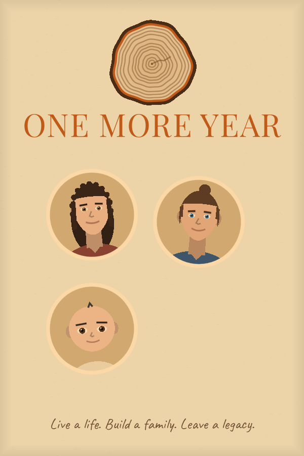
Ikoner för gränssnittet
24 ikoner i samma stil: tunna rundade linjer som tar färg från tidsepoken. Flikar (This Year, People, School & Work,
Money, Family Tree, Chronicle), värden (hälsa, glädje, smarthet, utseende, kondition, pengar) och händelser
(kärlek, vänner, brott, hem, bebis, bröllop, död, missbruk, tidningen, inställningar, feedback, nästa år).
De är SVG-filer i docs/brand/icons och läggs in i spelet när du har sagt vad du tycker.
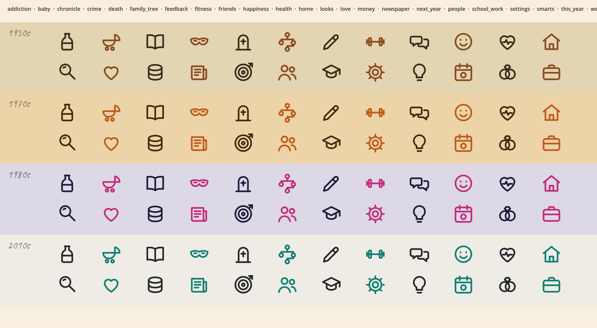